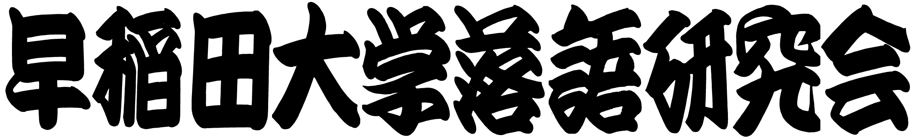

早稲田大学落語落語研究会（通称・らっけん）は落語の鑑賞を主な目的として活動しています。
落語の実演に重きを置く多くの他大落研とは異なり、落語に対する接し方は個々の会員によってそれぞれです。
実演に力を入れる会員も多くいますが、一方で鑑賞・研究に徹する会員もいるという空間です。
別段鑑賞派と実演派に分かれているわけでもありません。
また、早稲田大学にはコントや漫才などの「お笑い」を扱うサークルが他に存在しますが、
（箇々の会員の興味は別として）本会としての活動では、ほぼ純粋に落語のみを扱います。
|
大学公認サークル |
４月：新歓ライブ・花見・寄席総見
５〜６月：外部鑑賞会・内部鑑賞会・寄席総研
７月：納会
８〜９月：夏合宿
１０月：鑑賞会
１１月：稲穂亭（早稲田祭）
１２月：わせだ寄席
１〜２月：新年会
３月：春合宿・追いコン